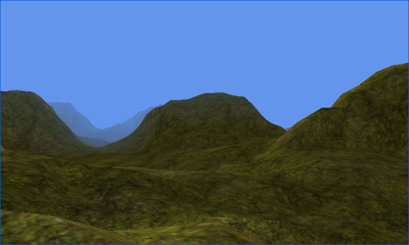

Lens Flare
Ported from Microsoft's XNA 4.0 Lens Flare sample.
Source for this sample on GitHub ↗
Known OpenGL ES 3 / WebGL 2 limitation: the terrain and its lighting render, but the sun glow and lens flares are effectively invisible. CNA does not yet implement a precise occlusion-count fallback for these renderers. This difference from the XNA original is knowingly accepted for this gallery release.

Play ▸Opens in a new tab. The known missing glow and lens flares also apply during play.
About this sample
Move through a textured mountain landscape while a camera-facing light source changes position in the view. The original XNA version uses an occlusion query to fade a bright sun glow and ten lens-flare sprites as terrain blocks the light. The camera and terrain work here, but WebGL 2 supplies only a boolean query result; CNA's general count fallback has not yet been implemented.
Controls
| Action | Keyboard | Gamepad |
|---|---|---|
| Look around | Arrow keys | Right stick |
| Move | W, A, S, D | Left stick |
| Reset camera | R | Press right stick |
| Exit | Escape | Back |